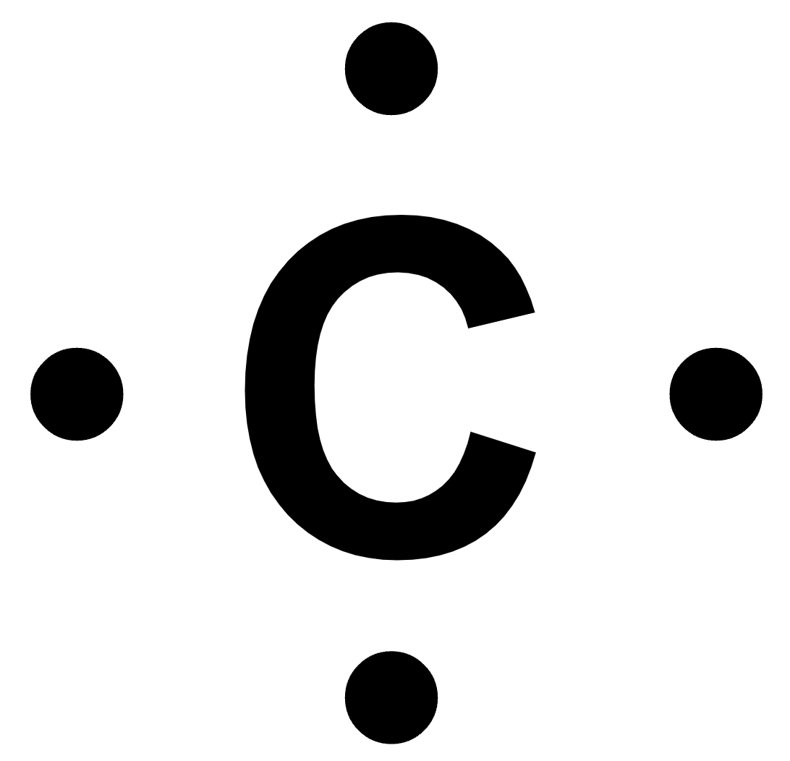
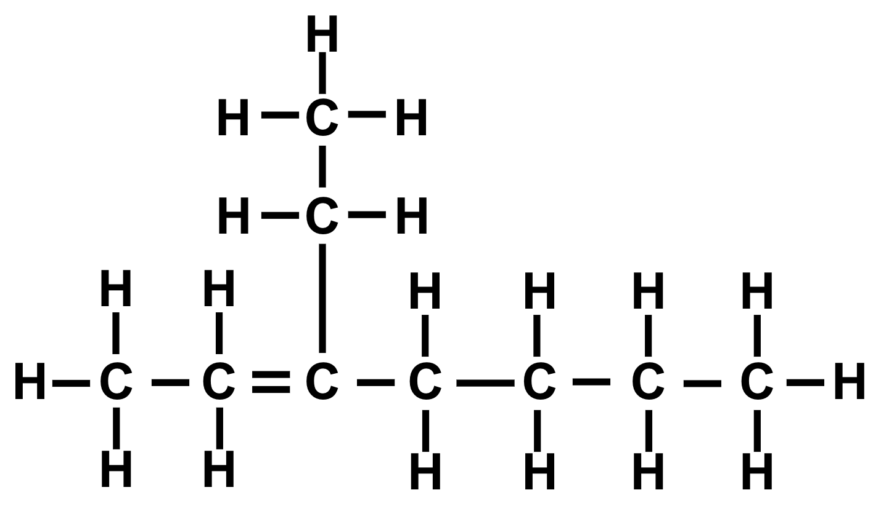

Please note that as this practice set and its answer key are created by a student and not professionally checked for accuracy, there may be mistakes or inaccuracies. Please email be.admy@gmail.com if you believe you have encountered such an error.
1. 4
2. 3
3. 4
4. 1
5. 4
6. 2 (helium is the exception to option 1, so option 1 is incorrect)
7. 3
8. 2
9. 1
10. 1
11. 4
12. 2
13. 3
14. 2
15. 3
16. 1
17. 3
18. 3
19. 2
20. 4
21. 2
22. 2
23. 1
24. 1
25. 1
26. 2
27. 4
28. 3
29. 2
30. 2
31. 1
32. 2
33. 4
34. 2
35. 1
36. 3
37. 3
38. 4
39. 2
40. 1
41. 3
42. 3
43. 4
44. 2
45. 3
46. 1
47. 3
48. 2
49. 3
50. 4
For most of the free-response problems, only one correct response is provided, but there may be more than one answer.
51. 3
52. (179.9 u)(0.00120) + (181.9 u)(0.265) + (183.0 u)(0.143) + (184.0 u)(0.306) + (186.0 u)(0.284)
53. Tungsten has a high density.
54. 
55. The electronegativity increases.
56. iron
57. carbon and hydrogen
58. (Per the official Regents solutions sheets, it seems that all bonds need to be shown for full credit.)
59. CH2
60. 126.27 g/mol
61. nonene
62. they are the same
63. Extremely high pressure shifts the equilibrium towards the side with the desired product, NH3.
64. The concentration of ammonia goes down.
65. H2
66. They both have 4 valence electrons.
67. 1.0 mol of SiO2 has a greater mass than 1.0 mol of CO2
68. tin
69. Zn(s) → Zn2+(aq) + 2e–
70. It allows for the flow of ions into both cells to prevent a buildup of charge.
71. electrical energy
72. unsaturated
73. The temperature of the surroundings (the water) increases.
74. 0.12 mol
75. 4NaCl(aq) + Pb(NO3)4(aq) → 4NaNO3(aq) + PbCl4(s)
76. lead(IV) chloride
77. chemical
78. 3
79. 10–8 M
80. hydronium
81. Nitrogen molecules have stronger intermolecular forces between them than fluorine molecules.
82. (1.500 L)(22.4 mol/L)
83. The chemical identity of lead-208 was changed.
84.
85. 1/16
© 2024 Derek Guo. All rights reserved.
No part of this website may be reproduced in any means without written permission from the creator of this document.